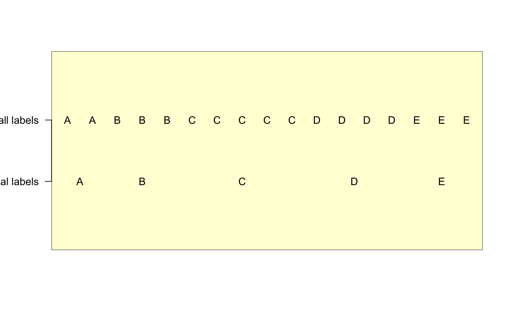

breaks a vector into groups
breaksByVector(x, labels = NULL, returnFractions = FALSE, ...)
| x | vector of labels |
|---|---|
| labels | character vector of custom labels to represent the items in x |
| returnFractions | logical whether to return fractional coordinates for labels that should be positioned between two labels |
| ... | additional parameters are ignored. |
list
The mid-point coordinate between each break. These midpoints would be good for drawing dividing lines for example.
The ideal point to place a label to represent the group.
A vector of labels the same length as the input data, except using blank values except where a label should be drawn. This output is good for text display.
The unique set of labels, without blanks, corresponding to the coordinates supplied by labelPoints.
This function takes a vector of values, determines "chunks" of identical values, from which it defines where breaks occur. It assumes the input vector is ordered in the way it will be displayed, with some labels being duplicated consecutively. This function defines the breakpoints where the labels change, and returns the ideal position to put a single label to represent a duplicated consecutive set of labels.
It can return fractional coordinates, for example when a label represents two consecutive items, the fractional coordinate can be used to place the label between the two items.
This function is useful for things like adding labels to
imageDefault color image map of sample groupings, where
it may be ideal to label only unique elements in a contiguous set.
b <- rep(LETTERS[1:5], c(2,3,5,4,3)); bb <- breaksByVector(b); # Example showing how labels can be minimized inside a data.frame data.frame(b, bb$newLabels);#> b bb.newLabels #> 1 A A #> 2 A #> 3 B #> 4 B B #> 5 B #> 6 C #> 7 C #> 8 C C #> 9 C #> 10 C #> 11 D #> 12 D D #> 13 D #> 14 D #> 15 E #> 16 E E #> 17 E# Example showing how to reposition text labels # so duplicated labels are displayed in the middle # of each group bb2 <- breaksByVector(b, returnFractions=TRUE); ylabs <- c("minimal labels", "all labels"); adjustAxisLabelMargins(2, ylabs);#> Error in adjustAxisLabelMargins(2, ylabs): adjustAxisLabelMargins() requires margin to be one of c(1,2,3,4).axis(2, las=2, at=c(1,2), ylabs);text(y=2, x=seq_along(b), b);text(y=1, x=bb2$labelPoints, bb2$useLabels);# The same process is used by imageByColors()